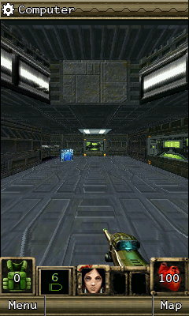

The player didn’t even have to select the original keypad to hit this DOOM II startup failure. Our shared screen measured both control modes before drawing. A hidden panel could stop the whole layout.D202
The original corridor was a different boundary.

The original 240×400 corridor and HUD after movement, turning and firing. Historical 0.1.0 engine output retained in the later checkpoint, not a phone screenshot.
Open the image for the full original view.
D290The original LG edition kept its 240×400 game canvas and its own key-event contract. Earlier original-world and save-reload checks remained intact beneath the layout repair.D201D204D205
One preparation-only input alias carried an Orcs-related name, while its contents were verified DOOM bytes. The record checked that identity instead of deciding what the file contained from its label alone.D206D207
About these records
The hidden-keypad failure is a source/framework reproduction matching a phone startup symptom, not an independently captured handset exception. Original engine evidence and the historical corridor image retain their earlier scope. The preparation alias is not substituted Orcs gameplay. The corrected APK’s physical acceptance is not inferred from these checks.
The receipts
Selected source lines, investigation notes and recorded feedback. Open a receipt for the original context and scope.
D202 / Three pixels in a hidden keypad stop the first layoutCheckpoint investigation notes
Source: Doom_II_RPG_Bridge_v0.1.1_PRIVATE_CHECKPOINT.zip / Doom_II_RPG_Bridge_v0.1.1_PRIVATE/CHANGES_v0.1.1.txt · selected lines 3–7
Repairs a reproduced first-layout crash in v0.1.0. The shared UI measures both control modes before drawing; the game-owned hidden keypad was a few pixels taller than its declared minimum at fractional densities. At 2.625, its 264dp declaration rounded to 693px while its five 48dp rows plus padding/gaps needed 696px. DoomControls threw Original key target too small during Android measure, after Activity.onCreate had returned. The custom minimum now sums the same independently rounded components as the actual layout. This keeps complete 48dp targets and a square 144dp pad, preserves the live viewport and avoids switching/restarting the guest. The shared UI Kit itself remains the identical v1.1.2 JAR. A scoped uncaught-fault recorder retains later measure/layout/Java failures with display density and font scale before the normal Android handler runs. Existing independent SAVE REPORT now includes the retained fault. Inactive scoped handler nodes are skipped during lifecycle cleanup.
D203 / The phone symptom and reproduced cause stay distinctCheckpoint investigation notes
Source: Doom_II_RPG_Bridge_v0.1.1_PRIVATE_CHECKPOINT.zip / Doom_II_RPG_Bridge_v0.1.1_PRIVATE/CHANGES_v0.1.1.txt · selected lines 9–11
App versionCode increases to 2. Package com.wakka.doom2rpg, signing key, original edition identity, save paths, untouched original ARM runtime, all originals and all prepared audio match v0.1.0. Omni export/import instructions retain the same supported recipe. Build inputs exclude transient hidden transfer files. Phone evidence: Android reports the delivered app crashing and the recording shows immediate return to the launcher. No device exception log/density was supplied, so the exact handset exception is not independently proven. The matching startup fault is reproduced in the old build's source and repaired under Android framework checks. Real handset acceptance remains pending.
D290 / Historical image / DOOM II RPGHistorical host capture
Source: Doom_II_RPG_Bridge_v0.1.1_PRIVATE/evidence/original-native-acceptance/move-turn-fire.png
Retained historical host output. Original emulator chrome, where present, is part of the unchanged source image. No phone capture or phone performance is inferred.
Unchanged historical image. Source member: Doom_II_RPG_Bridge_v0.1.1_PRIVATE/evidence/original-native-acceptance/move-turn-fire.png SHA-256: 6b808dea94e4383167a40e0d3db4535f382f0289b0a7fe35a913554a3e40302e The original 240×400 corridor and HUD after movement, turning and firing. Historical 0.1.0 engine output retained in the later checkpoint, not a phone screenshot. Scope: Unchanged historical desktop original-runtime framebuffer. Visually inspected: game-only pixels, no personal interface and no EXIF. Not a physical-phone screenshot.
D201 / The newer DOOM edition has its own key eventCheckpoint investigation notes
Source: Doom_II_RPG_Bridge_v0.1.1_PRIVATE_CHECKPOINT.zip / Doom_II_RPG_Bridge_v0.1.1_PRIVATE/AGENTS.md · selected lines 4
Execute the unchanged original DOOM II RPG BREW ARM/Thumb MOD/BAR/MIF/config from d2rp.zip. Do not substitute reconstructed scenes or game logic. The MIF identifies 7.1.73 en.lgax830, native class 0x0109010f. This module handles EVT_KEY_PRESS 0x101 and release 0x102. Do not restore the older Doom/Wolf press 0x100.
D204 / The original LG canvas and controlsCheckpoint investigation notes
Source: Doom_II_RPG_Bridge_v0.1.1_PRIVATE_CHECKPOINT.zip / Doom_II_RPG_Bridge_v0.1.1_PRIVATE/README_FIRST.txt · selected lines 7–15
The supplied d2rp.zip is DOOM II RPG, English BREW build 7.1.73 en.lgax830. Install the separate Doom_II_RPG_Bridge_v0.1.1_PRIVATE.apk. Its launcher name is DOOM II RPG. Android 8.0+; no network connection, firmware installation or external runtime app is required. Choose Yes at the original sound prompt. The original introduction, difficulty and character selection are preserved. The untouched original ARM/Thumb executable draws its own graphics and runs its own game logic on a 240x400 LG canvas. CONTROLS D-pad: forward/back and turn; center OK selects. FIRE / OK (5): use, talk or fire. 1 / 3: strafe. 7 / *: change weapons. 9: wait. 0: original menu. #: original map / contextual More. Both original softkeys and CLEAR remain separate. CLEAR may close this edition; Android Back performs cleanup and returns to Omni when launched there. ORIGINAL KEYPAD and D-PAD RETURN switch in one tap within the control panel. The separate original D-pad stays present. Both modes keep the same live viewport. Touch holds are released safely; correctly registered physical holds survive switching.
D205 / Original world, saves and separate phone boundariesCheckpoint investigation notes
Source: Doom_II_RPG_Bridge_v0.1.1_PRIVATE_CHECKPOINT.zip / Doom_II_RPG_Bridge_v0.1.1_PRIVATE/README_FIRST.txt · selected lines 25–29
VERIFICATION AND LIMITS Original executable: title, character selection, opening story, first-level gameplay, move/turn/action, map/menu, native Save Game, fresh-session Continue, original audio-source matching, suspend/resume and native teardown verified on the host JVM. Android framework: cold startup before content attachment, normal/keypad modes, measured safe bounds, digital pad geometry, touch/action ownership, hardware holds through switching, both orientations, font scale 1.3, Android Back, pause cleanup, startup fault capture and independent reporting with a blocked game worker tested under Robolectric. This is not physical-device gameplay testing. The phone screenshot/recording establishes an immediate v0.1.0 crash but supplies no exception stack or density value; the reproduced density fault matches that failure timing. A successful launch of this update on the handset is not claimed. The complete campaign, later puzzles/bosses, physical-phone speed/audio quality, touch comfort and actual Downloads permission/storage behavior remain unverified. Original CMID scores use Android MIDI synthesis, whose instrument timbre can differ. Native handset vibration requests currently have no Android vibration output.
D206 / An Orcs-named preparation alias contains DOOM bytesCheckpoint investigation notes
Source: Doom_II_RPG_Bridge_v0.1.1_PRIVATE_CHECKPOINT.zip / Doom_II_RPG_Bridge_v0.1.1_PRIVATE/OMNI_HANDOFF_NOTES.txt · selected lines 5–7
The current Omni capability contract already includes the required gzip-CMID-to-MIDI/PCM converter under legacy-audio-v1, preparation id m-orcs. Its input filename is fixed by that existing generic implementation. Consequently orcsandelves2.bar is a preparation-only alias whose complete SHA256 equals doom2rpg.bar. It contains DOOM II RPG's supplied original BAR, with no Orcs game code or assets. The actual runtime reads doom2rpg.bar only. Using the verified alias avoids asking the owner to change Omni or executing a new checkpoint script on the phone. No new unsupported recipe/action is declared. Preparation inventories pin all 143 unique output assets. MIDI outputs use exact hashes. WAV outputs use verified-source-pcm-v1 with original encoded-source fingerprint, canonical desktop PCM reference, channels/rate/bits/frame count. Public reconstruction produced byte-identical MIDI and equivalent canonical PCM on the host. Actual phone architecture decoding remains a separate acceptance check.
D207 / Production preparation classes and pure interpretationCheckpoint investigation notes
Source: Doom_II_RPG_Bridge_v0.1.1_PRIVATE_CHECKPOINT.zip / Doom_II_RPG_Bridge_v0.1.1_PRIVATE/OMNI_HANDOFF_NOTES.txt · selected lines 11–13
Tests run against the unchanged Omni 0.5.7 production intake/export/preparation implementation with its explicit host service adapters. No com.wakka.doom2rpg backfill rule is present or added. Private APK intake, exact original ZIP recognition, readiness, original/derived stripping, fresh Public reconstruction, native save sentinel, remove/restart/reimport, second unrelated public export and carry-forward all pass. Temporary test exports were not published or delivered as Omni releases. The game is pure Java ARM/Thumb interpretation in this bridge; it needs no native phone firmware or external EKA2L1 seed. There are no native .so libraries or original guest Java/DEX classes in the APK. The source and signing data are outside the APK.